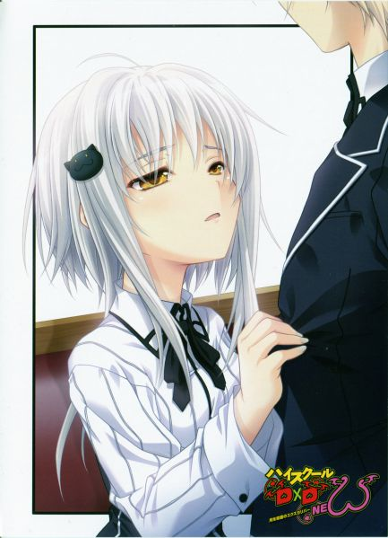

Život 3
Sudnji dan za Sveti mač!
Deo 1
"Neeeeeeeeeeeeeeee!! Idem kući!!"
Saji je vrištao i pokušavao da pobegne. Koneko-chan ga je držala i nije ga puštala. Kada sam predložio plan da uništimo Excalibur, Koneko-chan je razmislila i složila se.
[Pomoći ću i ja. Radi se o Yuuto-senpaiju, zar ne?]
Kao što se i očekivalo od Koneko-chan! Saji je s druge strane pobledeo i odmah pokušao da pobegne. A Koneko-chan ga je uhvatila.
"Hyoudou! Zašto ja!? To je vaš grupni problem, zar ne!? Pripadam Kući Sitri! Ne bih trebalo da učestvujem u ovome! Nikako!!" Saji je protestovao dok je plakao.
"Nemoj tako, Saji. Jedini đavo kog znam da je voljan da mi pomogne si ti."
"Gluposti! Nema šanse da ću ti pomoći! Biću ubijen! Biću ubijen od strane Kaichouuuuu!!"
Oooh, strah koji imaš od Kaichou se pojavljuje na tvom licu.
Kaichou mora da je zaista strašna, ha.
"Tvoja gospodarica, Rias-senpai, možda je stroga i ljubazna! Ali znaš šta! Znaš
Kaichou!? Ona je stroga i stroga!"
Da. Buchou je stroga, ali i ljubazna. Je li tako? Dakle, Kaichou je stroga, ha. To je dobro za tebe. Nakon što sam odlučio, otišao sam u potragu za Shidou Irinom i Xenovia u gradu sa Konekochan i Saji.
"Hej Koneko-chan. Znaš da je Kiba žrtva "Projekta Sveti mač" i da takođe gaji mržnju prema Excaliburu, zar ne?"
Koneko-chan je klimnula glavom na moje pitanje.
"Kada su Irina i Xenovia došle kod nas, rekle su ovo."
[Crkva je odlučila da bi bilo bolje eliminisati sve Excalibure, nego dozvoliti da ih koriste Pali Anđeli. Naš minimalni cilj je da uzmemo Excalibure od Palih Anđela.]
"Dakle, drugim rečima, moraju da unište ukradene Excalibure ili da ih vrate, zar ne?"
"... Da. To je tačno."
"Zato sam pomislio da bismo im mogli pomoći da ih vrate. Tako što ćemo Kibu učiniti glavnom osobom. Tri mača su ukradena, tako da im neće smetati ako vratimo ili razbijemo jedan od njih."
"... Želiš da Yuuto-senpai savlada Excalibur i ispuni svoju želju, zar ne?"
To je tačno. Klimao sam glavom sa osmehom. Da se to desi, onda bi Kiba ostvario svoju osvetu i sve bi bilo u redu. Onda bi nastavio da radi posao đavola sa nama sa osmehom. Tako sam mislio.
"Kiba želi da pobedi Excalibur i ostvari svoju osvetu i osvetu svojih bivših drugova. Xenovia i Irina žele da vrate Excalibura od Palih Anđela, čak i ako ih moraju uništiti. Imamo isti cilj onda. Ostaje da vidimo da li će te dve slušati reči nas Đavola."
"... Izgleda teško."
"Hmmmm, da."
Bilo je baš kao što je Koneko-chan rekla. Da budem iskren, verovatnoća da se to dogodi nije bila tako visoka. A takođe... "... To je tajna od Buchou i ostalih članova." Da. Bilo je baš kao što je rekla. Nismo mogli da dozvolimo da Buchou i Akenosan saznaju. Buchou bi definitivno odbila.
[Čak i radi Yuuta, ne možemo da stavljamo vrat u probleme koji uključuju Anđele.]
To bi rekla. Ona je visoko rangirani Đavo, pa bi bila stroga povodom ovoga. Kada sam išao da spasim Asiju, bila je protiv. Takođe sam morao da to držim u tajnosti od Asie. Ona je tip koji ne može da sakrije stvari. Takođe bi bila loša u laganju.
"... Kada odemo i razgovaramo sa njima, to bi moglo da dovede do borbe i tenzija između nas i njih bi mogle da se pogoršaju."
To bi bio kraj. Morao bih nešto da uradim čak i ako bih morao da rizikujem svoj život. Uoooo. Mogao bih onda da umrem...
"Zato možeš da odeš, Koneko-chan. Saji. Takođe možeš da pobegneš ako postane opasno."
"Neću pobeći. To je zbog našeg druga."
... Koneko-chan mi je to rekla očima punim snage. Ova devojka... Bez obzira na to šta kaže, ona uvek gori iznutra. Takođe je bila dobrog duha u meču protiv Feniksa. Mislim da su joj osećanja prema drugovima jako jaka.
Dvadeset minuta nakon što smo ih tražili u gradu. Ne bi bilo lako pronaći dve žene koje nose bele haljine na tajnom zadatku... "Molim te, daj blagoslov izgubljenom jagnjetu-"
"Molim te, daj nam milostinju u ime Oca na nebu!"
Lako smo ih pronašli. Bile su dve devojke u belim haljinama, koje su se molile na putu. Vau. Isticale su se. Bilo ih je lako pronaći. Izgledalo je kao da su bile prilično uznemirene. Ljudi koji su prolazili pored njih su im bacali čudne poglede.
"Kako je ovo moguće? Ovo je realnost razvijene zemlje Japana? Zato ne volim zemlje koje nemaju miris naših verovanja."
"Nemoj tako, Xenovia. Izgubili smo sav novac koji smo imali. Zato moramo da se oslanjamo na milostinju od ovih heretika, inače nećemo moći da kupimo hranu, znaš? Aaah, ne možemo čak ni da kupimo jedan hleb!"
"Hmph. Sve se to dogodilo jer si kupila tu lažnu sliku."
Xenovia je pokazala na sliku sveca koja je bila jako loše nacrtana. Šta je ovo bilo? Da li su prevareni na nekoj lažnoj izložbi?
"Šta pričaš? Ova slika ima crtež nekoga ko izgleda kao svetac! Tako je rekla i osoba na izložbi!"
"Onda znaš ko je osoba na crtežu? Ja sigurno ne znam."
Osoba na slici je definitivno izgledala kao stranac i nosila je siromašnu odeću i imala je nešto na glavi. Takođe je bilo i beba Anđeo u pozadini sa trubom koja je letela u vazduhu.
"... Mislim da je to... Sveti... Petar...?"
"Nemoj da se zajebavaš. Sveti Petar ne bi izgledao ovako."
"Ne, morao je da izgleda ovako! Sigurna sam u to!"
"Aaah, zašto je moj partner morao da bude neko kao ti... Bože, da li je i ovo iskušenje?"
"Nemoj da spuštaš glavu. Zaista se depresivno ponašaš kada si dole, zar ne."
"Ćuti! Zato se protestanti zovu heretici! Vi imate drugačija verovanja od nas katolika! Pokažite više poštovanja prema svecima!"
"Šta? Šta je, to je katolicizam gde se i dalje poštuje stari zakon!"
"Šta si rekao, heretiku?"
"Šta si rekao, heretiku!?"
Te dve su počele da se svađaju udarajući glavama jedno o drugo...
KRČ.
Onda smo čuli zvuk njihovih stomaka kako grme dok smo bili na udaljenosti od njih. Njih dve su pale na zemlju sa grmećim stomacima.
"... Prvo, uradimo nešto da napunimo stomake. Inače, nije pitanje vraćanja Excalibura."
"... U pravu si. Da li želiš da uzmemo novac od heretika tako što ćemo ih ucenjivati? Mislim da će nam Bog oprostiti ako ucenjujemo heretike."
"Da li planiraš da napadneš hram? Ili planiraš da ukradeš njihovu kutiju za priloge? Nemoj da radiš ni jedno ni drugo. Hajde da koristimo naše mačeve da izvedemo performans. To je međunarodna zabava koja funkcioniše u svakoj zemlji."
"To je odlična ideja! Ako možemo da sečemo voće našim Excaliburima, onda možemo da sakupljamo keš!"
"Pa, nemamo voće. Ne može se izbeći. Hajde da isečemo tu sliku."
"Ne! Ne možeš ovo da isečeš!"
Njih dve su ponovo počele da se svađaju. Otišao sam ka njima dvema iako sam dobijao glavobolju. Ozbiljno. Nisu izgledale kao devojke sa kojima sam se svađao u klubu samo pre nekoliko dana.
Deo 2
"Ukusna! Japanska kuhinja je ukusna!"
"Da, da! Ovo je to! Ovo je ukus hrane moje domovine!"
Irina i Xenovia su počele da pune stomake hranom koju su naručile u porodičnom restoranu. Čoveče, puno jedu. Da li su zaista ubice poslate iz Hrišćanske Crkve?
Kada su nas ranije videle, gledale su nas gladnim očima.
"Ummm... mi ćemo sada da jedemo, pa da li želite da dođete sa nama?" Kada sam ih pitao, odmah su rekle "da".
[Prodali smo duše Đavolima.]
[Ovo je takođe da bismo ispunili našu misiju.]
Govorile su nešto slično dok smo išli ovde. Brinuo sam se za svoj novac, ali Koneko-chan je rekla da će takođe platiti. Nije muško da nateram devojku da plati! Posebno jer je ona mlađa od mene! To je ono što sam želeo da kažem, ali nakon što sam video ove dve kako jedu, bio bih u velikom problemu ako ne bismo platili zajedno. Ov... ovo je takođe za klub. To je za našu grupu.
Prokleti Kiba! Prolazim kroz sve ovo zbog tebe! Definitivno ću naterati Kibu da me upozna sa jednom od njegovih vrućih klijenata! "Uf. Sada sam mirna. Kraj sveta je da ti pomogne Đavo." To je rekla Xenovia.
"Hej. Mi te častimo hranom i to je ono što kažeš?"
Rekao sam to dok sam suzdržavao svoje emocije. Nisam mogao da razgovaram sa njima jakim rečima. Inače ne bismo mogli da pregovaramo.
"Pheeeew! Hvala na obroku. Aaah Bože, molim te, daj milostinju ovim Đavolima."
Irina je rekla koristeći svoj krst.
[Au!]
U tom trenutku sam dobio glavobolju. Isto se desilo Koneko-chan i Saji, pa su i oni dodirivali glavu. Čini se da smo mi Đavoli primili neku štetu jer je koristila svoj krst.
"Ah, izvinjavam se. Uradila sam to bez razmišljanja."
Irina se nasmešila slatkim licem. Ove dve izgledaju kao bishoujo ako ih normalno pogledate. Xenovia je popila šolju vode i duboko udahnula. Zatim je pitala.
"Dakle, zašto ste došli kod nas?"
! Nikada nisam mislio da će odmah doći do toga. Pa, izgledalo je da se nismo slučajno sreli.
"Vi dve ste došle u ovu zemlju da vratite Excalibura, zar ne?"
"To je tačno. Već smo ti to rekli."
Obe nisu izgledale kao da nam prete jer su upravo završile sa hranom. Nije imalo smisla da se bore protiv nas u ovom porodičnom restoranu, a čak i da smo se borili, bile su sigurne da bi nas lako pobedile. "Želim da vam pomognem da uništite Excalibur."
Obe su izgledale iznenađeno na ono što sam upravo rekao. Takođe su se gledale jedna drugu.
GUTALJ.
Progutao sam pljuvačku i čekao njihovu odluku. Vau, strašno je. Strašno! Ako nas odbiju, bićemo u velikom problemu. To bi moglo da se pretvori u borbu između Anđela, Pali Anđela i Đavola! Kada razmislim o tome, Excaliburi bi trebalo da budu prilično važna stvar. A uništiti to zajedno sa nama Đavolima bi možda bila uvreda za njih? Brinuo sam se zbog takvih stvari, kada je Xenovia otvorila usta.
"Da. Možda je u redu da vam ostavimo jedan mač. Ako ga možete uništiti, to jest. Ali pobrinite se da vaši identiteti ne budu otkriveni. Takođe ne želimo da naši nadređeni i neprijatelji misle da smo povezani sa vama."
Nisam mogao da verujem svojim ušima kada je dala svoj pristanak. Da li je to u redu? Da li si ozbiljna? Stvarno?
„Hej, Xenovia. Da li si sigurna? Čak i ako je Ise-kun, on je ipak Đavo, zar ne?“ Irina je iznela prigovor. Pa, to je normalna reakcija.
„Irina. Da budem iskrena, bilo bi zaista teško da vratimo sva tri Excalibura i da se borimo protiv Kokabiela samo nas dve.“
„To znam. Ali...!“
„Minimalni ciljevi koje moramo postići su uništenje tri Excalibura ili njihovo vraćanje. Ako i naši Excaliburi budu ukradeni, onda bi trebalo da ih razbijemo pre nego što se to dogodi. Čak i ako koristimo poslednju šansu, postoji samo 30% šanse da ćemo uspeti u našoj misiji i sigurno se vratiti kući.“
„Ipak, mislili smo da je stopa uspeha dovoljno visoka da dođemo u ovu zemlju spremni da rizikujemo život.“
„Da. Viši činovnici su nam takođe rekli da nastavimo sa našom misijom i poslali su nas u ovu zemlju. To je skoro samoubistvo.“
„A zar to ne želimo mi, sledbenici?“
„Promenila sam mišljenje. Moja verovanja su fleksibilna. Tako da mogu da postupim na najbolji način.“
„Ti! Dugo sam razmišljala o tome, ali tvoja vera je malo čudna!“
„Neću to poricati. Ali mislim da je naša dužnost da izvršimo našu misiju i bezbedno se vratimo. Živeću i nastaviti da se borim za Boga. Da li grešim?“
„... Nisi pogrešila. Ali..."
„Zato nećemo tražiti pomoć od Đavola. Umjesto toga, tražimo pomoć od Zmaja.
Viši činovnici nam nisu rekli da ne pozajmimo snagu Zmaja.“
Xenovia je zatim pogledala mene. Zmaj... Ona je pričala o meni. Biće koje boravi u mojoj levoj ruci... Sekiryuutei.
„Nikada nisam mislio da ću sresti Sekiryuuteija u tako dalekoj zemlji. Čak i ako si postao Đavo, vidim da je zmajeva snaga u tebi i dalje prisutna. Ako je kao u legendi, onda možeš da povećaš svoju snagu do nivoa Maoua, zar ne? Ako steknete moć na nivou Maoua, onda možete da razbijete Excalibur bez problema. Takođe mislim da je to Božje delo što smo se sreli.“ Xenovia je radoznalo rekla.
„S-Sigurno nam nisu rekli da ne pozajmimo snagu Zmaja... Ali ti samo pričaš gluposti! Tvoja vera je sigurno čudna!“
„Čudno mi je u redu. Ali, Irina. On je tvoj prijatelj iz detinjstva, zar ne? Hajde da mu verujemo. Moći Zmaja.“
Irina je ćutala na Xenoviaine reči, ali njen izraz lica je pokazao da je sada u redu sa tim. Oh! U redu je onda? Da li si ozbiljna?
Ali da bih povećao svoju snagu do nivoa Maoua, moram da još više povećam svoju sposobnost. Ali ako prenesem svoju maksimalno pojačanu snagu na Kibu, on može da bude ravan ili jači od Excalibura. Siguran sam da je verovatnoća zaista velika.
„U redu. Pregovori su uspešni. Pozajmiću vam svoju Zmajevu snagu. Onda mogu da pozovem svog partnera za ovu saradnju, zar ne?“ Uzeo sam telefon i pozvao Kibu.
„... Razumem situaciju.“
Kiba je stavio usta na kafu nakon što je uzdahnuo. Pozvali smo Kibu u porodični restoran.
[Sa ovim dvema korisnicama Excalibura sam. Želim da i ti dođeš ovde, Kiba.] Kada sam to rekao, došao je ovde bez ikakvih prigovora.
„Da budem iskren, osećam se nezadovoljno kada mi korisnici Excalibura daju dozvolu da ga uništim.“
„To je grub način govora. Da si bio „Izgubljeni Đavo“, sekao bih te bez vremena za razmišljanje.“
Kiba i Xenovia su se pogledali. Hej, hej. Nemojmo se svađati pre strategije saradnje.
"Dakle, ti gajiš mržnju prema "Projektu Sveti mač". Prema crkvi i Excaliburima."
Kiba je izoštrio pogled na Irinine reči.
"Očigledno."
Odgovorio je niskim i hladnim glasom.
"Ali Kiba-kun. Zahvaljujući tom projektu, istraživanje korisnika svetog mača je pokazalo rezultate. Zato je stvorilo ljude poput Xenovia i mene koji se mogu sinhronizovati sa svetim mačevima."
"Da li misliš da je to oprošten čin ubiti sve test subjekte jer je projekat smatran neuspehom?"
Kiba je pogledao Irinu očima punim mržnje.
Sigurno je okrutno ubiti ih. Previše je okrutno. Mislim da je to nehuman čin za one koji veruju u Boga. Čak ni Irina nije znala kako da odgovori. Onda je Xenovia progovorila:
"Taj incident je takođe postao jedan od najgorih slučajeva među nama i ljudi su se osećali odvratno zbog toga. Osoba koja je bila zadužena za taj projekat u to vreme je imala problem sa svojim verovanjem. Zato je optužen za jeres. Sada je jedan od onih ljudi na strani Palih Anđela."
"Na strani Palih Anđela? Kako se zove ta osoba?" Kiba je zainteresovano pitao Xenoviu.
"... Balba Galilei. Čovek koji se zove "Arhiepiskop genocida".
Balba. Dakle, to je ime Kibinog neprijatelja.
"... Ako idem za Palim Anđelima, onda mogu da dođem do njega..."
Kibin pogled je imao boju nove odlučnosti. Samo poznavanje njegove mete bio je veliki korak za njega.
"Onda izgleda da moram da podelim informacije. Drugi dan sam napadnut od strane osobe koja je imala Excalibur. U to vreme, ubio je sveštenika. Onaj koji je ubijen je verovatno iz tvoje organizacije."
[!]
Svi su bili iznenađeni. Naravno! Nikada nisam pomislio da bi Kiba bio uključen pre nas! Pa zašto je sve vreme ćutao o tome? Siguran sam da je nešto imao na umu.
"Ime te osobe je Freed Zelzan. Da li ti je ovo ime poznato?"
Freed! Taj prokleti sveštenik! Sećam se njega vrlo dobro. On je onaj ludi sveštenik iz prethodnog incidenta! Još je bio u ovom gradu!? Xenovia i Irina su oboje pogledale Kiba oštrim pogledom.
"Vidim. Dakle, to je on."
"Freed Zelzan. Bivši egzorcista Vatikana. Genije koji je postao egzorcista sa 13 godina. Imao je mnogo velikih dostignuća jer je nastavio da eliminiše Đavole i mistične zveri."
"Ali je preterao. Čak je ubio i svoje saveznike. Freed nikada nije imao nikakvo verovanje prema našem Bogu od samog početka. Jedino što je imao bio je borbeni instinkt i nameru ubijanja prema čudovištima. Bilo je samo pitanje vremena kada bi bio optužen za jeres."
Aaah. Dakle, i vi ste imali problema sa njim. Razumem taj osećaj.
"Da li je tako? Freed je koristio ukradeni Excalibur da ubije naše sledbenike. Da mi platimo cenu jer grupa za odlaganje nije mogla da se brine o njemu u to vreme."
Xenovia je to rekla sa mržnjom. Freed je sigurno mržen od strane mnogo ljudi. Pa, očigledno.
"U svakom slučaju, pređimo na strategiju saradnje."
Xenovia je izvadila olovku i koristila je da piše na memorijskom bloku.
Dala nam je svoje kontakt podatke.
"Ako se nešto desi, pozovi ovaj broj."
"Hvala. Onda bi trebalo i mi..."
"Već smo dobili Ise-kunov broj od oba-sama." "Da li si ozbiljna!? Mama!? Dala ga je bez moje dozvole!?"
Dala je moj broj, svog sina, bez moje dozvole.
[Zašto ga ne zoveš?]
Verovatno mi je dala svoj broj jer smo prijatelji iz detinjstva!
"Onda je to to. Platiću ti za obrok drugi put, "Sekiryuutei" Hyoudou Issei." Xenovia je ustala nakon što je to rekla.
"Hvala na obroku, Ise-kun! Časti me ponovo sledeći put! Čak i ako si Đavo, Bog će dozvoliti ako me Ise-kun časti obrok! U redu je ako je hrana!"
Irina mi se zahvalila dok mi je namignula. Da li je u redu da ti je verovanje takvo? Oprostili smo se od njih dve, a svi smo duboko udahnuli.
Fuuuu. Nekako je proteklo glatko. Mislio sam da je to bezobziran plan, ali je bilo lakše nego što sam mislio. Osetio sam jezu kada sam pomislio da bih mogao da budem posečen od Excalibura da sam propao u pregovorima. To bi mogao da bude okidač za rat između Đavola i ljudi sa Božije strane... To je bio prilično hrabar potez za mene.
"... Ise-kun. Zašto si ovo uradio?"
Kiba me je tiho pitao. Sigurno se pitao zašto mu pomažem u osveti.
"Pa, mi smo drugovi. I pripadamo istoj grupi. I ti si mi pomogao pre. Nije da pokušavam da ti vratim uslugu, ali mislio sam da ću ti pružiti ruku ovog puta."
"Ako bih delovao sam, onda bih stvorio probleme za Buchou. To je takođe razlog, zar ne?"
"Naravno. Buchou bi se rastužila da odeš u besu. Pa, činjenica da sam sam napravio ovaj plan će takođe stvoriti problem Buchou. Ali bolje je nego da postaneš "izgnanik", zar ne? Pa, ispostavilo se da je uspelo, pošto smo sklopili dogovor sa tim devojkama iz Crkve."
Kiba i dalje nije izgledao zadovoljno. Ummm, on je prilično težak za saradnju.
Onda je Koneko-chan progovorila.
"... Yuuto-senpai. Počeće da mi bude usamljeno... ako senpai nestane."
Koneko-chan je napravila tužno lice. Ona je obično bez emocija, pa je iznenadna promena imala veliki uticaj na sve momke ovde. "... Pomoći ću ti... zato, molim te, nemoj da odeš."

... Koneko-chanin apel. Oh, ne. Čak i ako mi nije rekla direktno, osetio sam kako mi srce ubrzava. Aaah, definitivno ne mogu da izneverim našu grupu.
Ako mi kohai (mlađi) tako kaže, definitivno ne mogu da se pobunim! Kiba je izgledao zbunjeno, a onda je stavio osmeh na lice.
"Hahaha. Odustajem. Ako Koneko-chan kaže tako, onda ne mogu da radim nepromišljene stvari. U redu. Radiću sa vama. Zahvaljujući Ise-kunu, znam ko mi je pravi neprijatelj. Ali pošto ovo radimo, definitivno ćemo poraziti Excalibur."
Oh! Kiba je bio i željan da ovo uradi sada! Koneko-chan se osmehnula jer se osećala olakšano. Prokleto! Izgledaš tako slatko, Koneko-chan! Osetio sam kako mi srce ubrzava iako nisam lolicon!
"U redu! Sada smo formirali grupu da uništimo Excalibur! Hajde da porazimo ukradeni Excalibur i tog prokletog Freeda!"
Bio sam potpuno uzbuđen! U redu! Idemo ovako! Mislim da možemo da uradimo to ako smo ja, Kiba i Koneko-chan! Ne, možemo da uradimo to! Čekaj nas, Excalibur, Freed! Ali bilo je jednog momka koji nije bio tako željan da to uradi.
"... Ummm, da li ja moram da radim to takođe?"
Saji nas je pitao dok je podigao ruku.
"Mislim, ja sam potpuno neuključen u ovo... Uostalom, kako su Kiba i Excalibur povezani?"
Oh da. Ovaj momak nije znao za Kiba i Excalibur. Za Sajija, verovatno nije razumeo šta se dešavalo u ranijem razgovoru.
"... Hajde da malo pričamo."
Kiba je onda počeo da priča o svojoj prošlosti nakon što je popio kafu. Projekat koji je Katolička crkva tajno planirala. Projekat Sveti Mač. Test da se napravi mnogo ljudi koji mogu da koriste svete mačeve odvijao se u određenoj instituciji. Bilo je dečaka i devojčica koji su imali talenat za korišćenje mačeva i posednika Svetog Alata. Dan za danom, prolazili su kroz nehumane eksperimente. Bili su eksperimentisani i oduzeta su im prava na slobodu. Nisu bili tretirani kao ljudi i njihovi životi su bili ignorisani. Ali imali su san. Da žive.
Bili su primorani da veruju da ih Bog voli, i samo su čekali da dođe "taj dan".
Verovali su da će postati posebna bića. Verovali su da mogu da postanu ljudi koji mogu da koriste svete mačeve. Ali rezultat je bio "odlaganje". Kiba i njegovi drugovi nisu mogli da koriste svete mačeve.
"... Svi su umrli. Bili su ubijeni. Ubijeni od strane onih koji služe Bogu. Niko nas nije spasio. Samo zato što nismo mogli da koristimo svete mačeve. Druga deca su bila stavljena pod otrovni gas dok su još bila živa. Stavili su otrovni gas na nas dok su govorili "amin". Povraćali smo krv i patili na podu. Čak i tako, tražili smo pomoć od Boga."
Kiba nam je ispričao svoju priču. Slušali smo ga u tišini. Kiba je nekako uspeo da pobegne iz laboratorije, ali ga je otrovni gas već zarazio. Osim određenih ljudi, ispitanici koji su imali niže sposobnosti od proseka su svi bili uklonjeni jer nisu bili potrebni.
Kiba, koji je uspeo da pobegne, sreo je Buchou koja je došla da poseti Italiju dok je umirao. I sada je bio ovde.
"Želim da ostvarim žaljenje svojih drugova. Ne, ne želim da njihova smrt bude uzaludna. Moram da nastavim da živim umesto njih, i moram da dokažem da sam jači od Excalibura."
... Kakvu je intenzivnu prošlost imao. I Asia je imala tužnu prošlost. Ali Kiba je prolazio kroz život koji je bilo tako teško zamisliti... Da budem iskren, ne mogu da razumem bol kroz koji je Kiba prošao. Ali mislim da je teško živeti samo zbog osvete. Buchou je rekla da ga je učinila svojim slugom kako bi mogao da iskoristi svoje talente za nešto drugo osim poražavanja svetih mačeva.
"Uuuuuuu... plač..."
Slušali smo Kibin prošlost sa ozbiljnim licima, ali čuli smo nekoga kako plače. To je bio Saji. Glasno je plakao. Imao je toliko suza koje su mu padale iz očiju, i toliko je plakao. Takođe je imao curenje iz nosa...
Saji je uzeo Kibin ruku i rekao:
"Kiba! Moralo je biti strašno! Moralo je biti bolno! Prokletstvo! Nema Boga ni nade na ovom svetu! Sada osećam toliko saosećanja prema tebi! Da, to je strašna priča! Razumem zašto gajiš mržnju prema tim ljudima iz crkve i Excaliburu!" Oooh. Pogledaj kako Saji priča.
"Da budem iskren, nisam te voleo ranije jer si bio zgodan momak... Ali sada je drugačije! Takođe ću pomoći! Spreman sam da prihvatim kaznu od Kaichou! Ali pre toga moramo da uništimo Excalibur! Takođe ću naporno raditi! Takođe moraš da živiš! Nikada nemoj da izneveriš Rias-senpai koja te je spasila!"
Ono što je rekao je bilo čudno... ali bio je i kao ja, bio je pun strasti! Više kao da je bio dobar momak. Da, nije bio loš momak. Osećao sam se loše što sam ga uvukao u ovo, ali izgledalo je da je sve u redu.
"U redu! Dobro je vreme! Želim da čujete moju priču! Trebalo bi da znate o meni ako zajedno radimo!"
Saji je izgledao malo stidljivo, a onda je rekao sa sjajnim očima.
"Moj san je... da zatrudnim Kaichou i oženim je! Ali, znate... trudnoća devojke i oženiti se je teško za nepopularnog momka kao što sam ja. Uopšte nema devojaka koje mogu da zatrudnim... Ali jednog dana ću je zatrudneti i oženiti se..."
... Nakon što sam čuo Sajijevo priznanje, nešto unutar mene je izlazilo. Onda su mi iz očiju potekle suze. Naravno. Naravno, idiote! Ovaj momak! Saji! On je isti kao ja! On je isti kao ja! Ima isto razumevanje sveta kao ja... Skoro sam zaplakao jer sam bio dirnut. Ali stavio sam ruke na usta da bih se zaustavio. Uzeo sam Sajijevu ruku i rekao mu direktno:
"Saji! Slušaj me! Moj cilj je da opipam Buchouine grudi... i onda ih sisam!"
"...!"
PAD.
Nakon pauze, još više suza je teklo iz Sajijevih očiju.
"Hyoudouuuu! Da li znaš šta pričaš? Da li shvataš koliko je težak taj san, dodirnuti grudi visokorangiranog đavola... Dodirnuti grudi svog gospodara?"
"Saji. Možeš da ih dodirneš. Možeš da dodirneš grudi visokorangiranog đavola... Možeš da dodirneš grudi svog gospodara! Ja sam zapravo opipao Buchouine grudi ovom rukom."
Rekao sam to dok sam pomerao ruke. Saji je pogledao moju ruku šokiranim licem.
"Nemoguće!? Nešto slično je moguće!? Ne lažeš, zar ne!?"
"Nije laž. Gospodarove grudi su daleko. Ali nije da ne možeš da ih dohvatiš."
"Sisati...!? Sisati Kai... Kaichouine grudi... Pričaš o bradavici, zar ne...? Mesto gde možeš da sisaš je bradavica, zar ne...?"
"Glupane! Ako ćeš da sisaš grudi, onda je bradavica jedino što možeš da sisaš! Da! Sisaću bradavicu!"
"...!!"
Saji je počeo da plače kao muškarac nakon što je čuo moje jake reči.
"Saji! Možda smo beskorisni "Pešaci" ako smo sami. Ali drugačije je ako smo nas dvojica. Možemo da letimo ako smo nas dvojica! Možemo da se borimo ako smo nas dvojica! Možemo da uradimo to ako smo nas dvojica! Možemo da ih trudnimo i oženimo se ako smo nas dvojica! Hajde da imamo seks sa svojim gospodarima!"
"Da. Da!"
Ništa nije nemoguće ako smo dvojica zaljubljena u grudi svog gospodara! Uzeli smo se za ruke i klimnuli glavom. Drug. Ratni drug. Čak i ako koristim mnoge reči, ne mogu da objasnim odnos između nas.
U to vreme Saji i ja smo osetili nešto svojim dušama i povezali smo se jedno s drugim.
"... Ahaha."
"... Ti si najgori."
Kiba i Koneko-chan koji su bili pored nas su uzdahnule. Da sam pogledao okolo, svi u restoranu bi nas gledali čudnim pogledima. Pa, ne obraćaj im pažnju. Tako je formiran "tim za uništavanje Excalibura".
Deo 3
"Nekoliko dana kasnije...
Sedeo sam za svojim stolom u učionici, teško uzdišući.
Svakog dana nas četvoro; ja, Kiba, Koneko-chan i Saji tražili smo Excalibur.
Naš protivnik je bio taj prokleti sveštenik Freed koji je radio pod Palim Anđelima. Izgleda da je lovio sveštenike koje je slala Crkva. Tako da smo lutali gradom obučeni u svešteničke haljine, ali i dalje ga nismo mogli pronaći. Pa, moj pravi osećaj je bio da ga nikada više ne želim videti. Nosili smo svešteničku odeću koju nam je dala Xenovia koja je smanjila našu magičnu moć, ali i dalje ga nismo mogli sresti. Gde se taj prokleti sveštenik krije? Hteo sam da ga pronađem kako bi Kiba mogao da uništi Excalibur... Ovako, biće nas uhvatila Buchou i ući ćemo u velike probleme. Počela je da sumnja u nas... Izvinjavam se, Buchou, što radim nešto ovako bez da ti kažem. Takođe ću naporno raditi.
Zato, molim te, dozvoli nam da ovo uradimo. Kao da sam se izvinjavao u svom srcu.
"Imaš ozbiljno lice u poslednje vreme, Ise."
Motohama mi je rekao dok je popravljao položaj naočara.
"Eh? Aaah, da nekako. Čak i ja moram ponekad da razmišljam o određenim stvarima."
"Da li je to? Da li si razmišljao o opipavanju Rias-senpaijinih grudi ili
Himejima-senpaijinih grudi?"
"Svaki dan mi je teško da biram to, Motohama. Inače, u smislu veličine, Buchou pobeđuje. Buchou takođe pobeđuje u smislu punoće. Ali u smislu mekoće, Akeno-san pobeđuje... Ne, Buchou ima više mesa, ali Akeno-sanove imaju dobru ravnotežu sa grudima i bradavicama. Tako da me podseća na nešto poput
Yamato Nadeshiko! U smislu zabave, opipavanje Buchou pobeđuje. Ali
Akenosanine grudi su takođe velike."
"Ako nastaviš tako, jednog dana će te ubiti senpaijevi obožavaoci, znaš? Ima ih mnogo u ovoj školi."
"Motohama... Grudi su važnije od života."
"... To je duboko. Osetio sam šok u srcu." PINCH.
Neko mi je štipkao obraz. To je Asia-chan. Izgledalo je kao da je bila u jako lošem raspoloženju.
"Ahia-khan vhat ar yu duong?"
"………………"
Asia mi je štipkala obraz bez reči. Ali izgledalo je kao Asia, jer me nije jako štipkala. Morala je da čuje sve što sam upravo rekao...
"Prokletstvo! Ise, ti Ero-daiou! Prekršio si Okultni istraživački klub! I ne samo to, već i primaš takav tretman od Asia-chan! Nuooooooo!" Matsuda je pljuvao svoj bes na mene dok je držao glavu nadole.
“…Znamo, Ise. Izgleda da spajaš ruke sa Rias-senpaijem i Asia-chan nakon aktivnosti kluba, zar ne? Pokušavaš li da ideš kući držeći dve cvetice u rukama? Trebalo bi da te odnese vetar u drugu dimenziju i da te rastope sluzavi monstrumi.”
Ne, ne, Motohama. Nije tako jednostavno kako kažeš. To je zato što se Asia i Buchou takmiče jedna s drugom iz nekog nepoznatog razloga. Zato se osećam neprijatno jer sam između njih... Više kao da nema prostora za disanje kada sam između njih! Svaki put kada se to dogodi, zamišljam loše stvari kao što je "Da li mogu zaista da postanem Harem Kralj?" Ja sam beskoristan momak jer ne mogu čak ni da kontrolišem jednu devojku.
"Inače, Ise. Šta ćeš da radiš povodom plana za karaoke i bowling?"
Motohama me je pitao nakon što se vratio na svoje uobičajeno ja. Da. Planirali smo da se igramo pola dana tokom narednog vikenda sa troje nas, Azijom i
Kiryuom. Takođe smo pozvali Koneko-chan i Kiba. Asia i Kiryuu su dolazile. Iznenađujuće, i Koneko-chan je želela da dođe. Mislio sam da će sigurno odbiti... Problem je bio Kiba. Razgovarao sam sa njim, ali bila je ova situacija...
"Asia i Kiryuu dolaze. Takođe i Koneko-chan."
"Uooooooooooooo! Asia-chan i Toujou Koneko-chan! Mogu da podignem svoju napetost sa ovim!"
Matsuda je viknuo. Oh, čak i plače... Izgledalo je kao da je žudeo da razgovara sa devojkama. Izvinjavam se, Matsuda. Nastaviću da ti budem ispred. To je zato što svakodnevno provodim vreme sa bishoujosima. Ali postoje i teške stvari u tome.
SMACK!
Neko je šamarao Matsudu po glavi. To je bila devojka sa naočarima, Kiryuu.
"Izvinjavam se što takođe idem." Napravila je neprijatno lice.
"Fu. Ti si samo dodatna osoba Asia-chan. Već imamo osobu sa naočarima, a to je Motohama. Pa, u redu je."
"Šta je sa tim stavom, Matsuda? Nemoj da me stavljaš u istu grupu kao tog perverznog naočara. On će samo zaraziti našu grupu."
"Ova žena! Motohamaine naočare su posebne jer mogu da izračunaju BWH devojaka! On je drugačiji od tebe!"
Ali Kiryuu je samo namignula nakon što je čula Matsudu.
"Da li si zaista mislio da je on jedini sa tom sposobnošću?"
[!]
Svi smo se osećali neprijatno! Kiryuu je zatim pogledala dole na naše prepone!
"Hmm, vidim, vidim."
Osetio sam nešto opasno, pa sam sakrio svoje prepone obema rukama! Kada sam pogledao, Motohama i Matsuda su uradili isto! Nakon što je pogledala naše reakcije, Kiryuuine naočare su zasijale.
"Fufufu. Moje naočare mogu da izračunaju veličinu muškog "stvarčica". Od dužine do obima."
Wh... kakva zastrašujuća sposobnost! Onda li Kiryuu zna veličinu svih muških "stvarčica" u našoj učionici!? Plašio sam se. Ali Kiryuu je stavila ruku na moje rame i namignula.
"U redu je. Tvoja veličina je prilično velika. Ako je previše velika, to bi spustilo žene, ali ti i dalje treba određena veličina. Da, Rias-senpai i Asia bi definitivno bile zadovoljne."
Uoooooooo! To je seksualno uznemiravanje! Seksualno me uznemirava devojka!
"Dobro za tebe, Asia."
"?"
Asia je postala zbunjena Kiryuinim rečima. Ne moraš da joj kažeš takve stvari!
"Bože, šta da se radi. Kažem da je Hyoudouov... stvarčica..." Kiryuu je šapnula Aziji na uvo!
"Hej, hej! Nemoj da pričaš čudne stvari Aziji!"
Povukao sam Aziju ka sebi da je zaštitim. Čoveče, ne mogu da spustim gard ispred ove devojke. Mi... pa, Asia je već videla moju stvarčicu...
"U svakom slučaju. Onda svi idu osim Kiba-kuna, zar ne?"
Kiryuu je brzo promenila stav nakon što je shvatila da ne može da nastavi ovaj razgovor.
"Ne, pokušaću nekako da navedem Kiba da dođe. Rekao je da će doći."
Da. Nekako ću ga odvesti. Provest ćemo se odlično!
Deo 4
"Nakon škole istog dana.
Okupili smo se u parku i presvukli se u svešteničku i sestrinsku odeću nakon završetka naše normalne klupske aktivnosti. Krstovi koje smo nosili su bili lažni. Da su bili pravi, povredili bismo se. Šetali smo gradom u ovoj odeći. Šetali smo uglavnom na mestima gde nije bilo ljudi. Iskreno sam želeo da danas dobijem neke informacije.
Iako sam tako mislio, vreme je brzo prošlo i već je bilo veče... Imali bismo problema da se ne vratimo uskoro. Ova akcija je bila tajna od Buchou i ostalih, a bilo bi problematično da nas uhvati studentski savet.
"Fu. Ni danas nema napretka."
Saji je rekao kao da je izgubio interesovanje. Saji je bio taj koji je bio najželjniji da ovo uradi. Ovaj momak je zaista dobar momak. Naš prvi susret je bio najgori, ali izgleda da se slažemo. On je perverzan na istom nivou kao ja. Mislio sam tako, ali Kiba koji je hodao ispred nas je zaustavio svoje noge.
"... Yuuto-senpai."
I Koneko-chan je izgledala kao da nešto oseća.
OTKUCAJ SRCA.
U tom trenutku osetio sam jezu u telu. Da li je to bila namerna smrt? Da li je bila usmerena na nas?
"Pogledaj gore!"
Saji je viknuo. Kada smo svi pogledali gore, bio je belokosi sveštenik koji je padao sa dugim mačem!
"Nešto poput božanske zaštite za grupu sveštenika, ha!"
KACHIN!
Kiba je brzo izvadio svoj demonski mač i blokirao Freedov udarac.
"Freed!"
"...! Da li je to tvoj glas, Ise-kun? Heee. Pa ovo nije čudan susret!? Kako si? Da li je tvoja Zmajeva moć porasla? Da li je u redu da te sada ubijem?"
Ovaj kreten ima lud stav kao i uvek! Dakle, mač koji sada drži je Excalibur? Sigurno osećam opasnuauru koja izlazi iz njega, baš kao Irina i Xenovia. Skinuli smo svešteničku odeću, otkrivajući naše uobičajene uniforme. Koneko-chan je takođe skinula sestrinsku odeću. Pa, mala sestra je takođe izgledala slatko.
"Boosted Gear!"
[Boost!]
Moja snaga se povećala. Moj zadatak ovog puta je bio da podržim. Prenesem svoju pojačanu snagu na Kiba. Hteo sam da se Kiba bori što više, ali morao bih da pomognem ako postane opasno.
"Ispruži moju liniju!" ŠVIS!
Nešto što je izgledalo kao mršava crna ruka je izašlo iz Sajijeve ruke i krenulo ka Freedu. Na njegovoj ruci je bilo slatko deformisano lice guštera. Linija je dolazila iz njegovih usta. Onda je ta mršava ruka bila jezik guštera!
"Kakva bol!"
"Freed je pokušao da ga odbije svojim svetim mačem, ali je jezik guštera promenio smer i krenuo nadole. Zalepio se za Freedovu desnu nogu i počeo da se vrti oko njegove noge. Freed je pokušao da odseče jezik svojim mačevima, ali je prošao kao da jezik nema nikakav fizički oblik.
"Ne možeš tako lako da ga odsečeš. Kiba! Sa ovim ne može da pobegne! Obori ga!"
Dobar posao, Saji! Vidim, zaustavio je njegove pokrete! Freed ima brze noge. Dobra je ideja da ga sprečite da pobegne. Imaš oštru glavu, Saji!
"Hvala ti!"
Kiba je brzo krenuo napred! Imao je dva demonska mača.
"Chi! Dakle, nije samo "Sveti brišač", vidim! Imajući više demonskih mačeva. Da li si možda posednik "Rođenja mača"? Vau. Kriv si što imaš retko Sveto oružje, znaš!"
Freed je izgledao kao da uživa, što je bilo suprotno od onoga što je rekao. Dakle, on je i dalje bio lud borbeni fanatik kao i uvek!
"Ali. Normalni demonski mačevi ne mogu da se suprotstave..." KACHIN!
Kibina dva demonska mača su se slomila nakon što su proizvela zvuk pucanja!
"... moj Excalibur-chan."
"Ku!"
Kiba je ponovo stvorio demonske mačeve. Ali izgledalo je da je Excalibur bio previše moćan. Mogao je da razbije demonske mačeve jednim zamahom!
"Kiba! Da li želiš da primiš moju moć?"
"Još uvek mogu da nastavim!"
Kiba je odbio moju podršku. Izgledalo je da je bio prilično iznerviran. Pa, to se i očekivalo. Kiba je već izgubio od Xenoviainog Excalibura. Njegov ponos mu verovatno ne bi dozvolio da izgubi i drugi put.
"Hahaha! Način na koji gledaš moj Excalibur je zastrašujući. Da li možda gajiš mržnju prema njemu? Pa, ne znam šta ti se dogodilo! Ali ako te ovo iseče, ne možeš izbeći da budeš eliminisan bez traga, znaš? Umrećeš, znaš! Umrećeš! Samo umri!"
Freed je skočio! Kiba je pokušao da ga blokira tako što je stvorio demonske mačeve oko područja. Ali...
KACHIN!
Sveti mač, koji je bio prekriven belo-plavom svetlošću, razbio je Kibaove mačeve jednim udarcem! Freed je zadao drugi udarac bez ikakvog trenutka za odmor! To je bilo loše! Kiba će biti ubijen! Onda sam osetio nešto čudno... Huh?
Da li me podižu? Pogledao sam stidljivo nadole, i to je bila Koneko-chan. Koneko-chan me je podigla!!
"... Ise-senpai. Molim te, pomozi Yuuto-senpaiju."
BACANJE.
Bačen sam sa puno snage! Bačen sam u vazduh od strane shouja sa superljudskom snagom! Uwaaah! Koneko-chan, nisam predmet! Ne možeš da me bacaš!
"Uooooooooo! Koneko-chaaaaaaaan!!"
Približavam se Kibi dok vičem. Prokleto! Ne može drugačije!
"Kibaaaaaaaa! Preneti ću ti svoju moć!"
"Uwah! Ise-kun!"
Aktivirao sam svoje Sveto oružje dok sam se približavao Kibi.
[Transfer!]
Opuštalo je zvuk i Zmajeva moć je otišla u Kiba!
Bilo je aure oko Kibinog tela. Bilo je prilično velika količina magične snage koja je pokrivala njegovo telo.
"... Moram da ga koristim pošto sam ga primio! "Rođenje mača"!" ZAN!
Oko celog područja su izlazili sečiva! Iz zemlje! Sa stuba svetlosti! Pojavljivali su se različiti oblici sečiva sa različitih mesta.
"Chiii!"
Freed je proizveo zvuk jezikom i počeo da lomi demonske mačeve koji su išli ka njemu.
ŠVIS!
Kiba je nestao sa svojim demonskim mačem čim je našao otvor. Koristio je demonske mačeve kao platformu i slobodno se kretao!
Vau! Mojim očima sam mogao samo da vidim nešto kako se kreće levo-desno!
To je za očekivati od "viteza" sa brzinom! Freed je pratio Kibin pokret očima!
ŠVIS!
Uz zvuk vetra, bio je demonski mač koji je išao ka Freedu! Kiba je bacio jedan od demonskih mačeva dok je koristio demonske mačeve kao putanju! Ne! To nije samo jedan demonski mač! Bilo je nekoliko demonskih mačeva koji su dolazili iz svih pravaca!
"Uhaa! To je dobar cirkuski trik! Ti pokvareni Đavole!"
KACHIN! KACHIN! KACHIN!
Freed je oborio demonske mačeve jedan za drugim sa izrazom uzbuđenja!
"Moj Excalibur je "Brzi Excalibur"! Što se tiče brzine, neće izgubiti od ičega!"
Sveti mač koji je Freed držao počeo je da vibrira na vrhu, a zatim je nestao! To je značilo da se sveti mač kretao tako brzo! Freed je uništio sve demonske mačeve i zatim je krenuo ka Kibi!
KACHIN!
"Ne radi!"
Demonski mačevi koje je Kiba držao u obe ruke su se srušili.
"UMI!"
U trenutku kada je Freedov mač išao nadole ka Kibi...
VUČENJE.
Freedovo telo je bilo povučeno nazad i izgubio je ravnotežu.
"Kao da ću te pustiti!"
To je bio Saji! Gušter je povukao svoj jezik nazad, što je dovelo do toga da Freed izgubi ravnotežu! U isto vreme, jezik guštera je stvorio plitku svetlost. Izgledalo je kao da je dolazilo od Freeda i išlo u Sajija.
"... Ovo je!? Prokletstvo! Da li apsorbuješ moju moć!?"
Apsorpcija!? Da li je jezik koji je izlazio iz Sajija imao neku posebnu sposobnost?
"Heh!
Kako je to? Ovo je moje Sveto oružje "Linija apsorpcije"! Dok je ova linija povezana sa tobom, tvoja će moć nastaviti da bude..."
"Apsorbovaće moje Sveto oružje! Da! Dok ne izgubiš svest, to jest!"
Sveto oružje! Vidim! Dakle, Saji je takođe posednik Svetog oružja! Dakle, ako je to povezano sa tobom, tvoja će moć nastaviti da bude apsorbovana! I ne možeš da ga sečeš svetim mačem! Sada se ne osećam kao da se borim protiv
Sajija...
"... Zmajski tip Svetog oružja, zar ne? Najproblematičniji tip. Početna sposobnost nije toliko velika pretnja. Ali kada poraste, destruktivna moć prevazilazi druga Sveta oružja na potpuno drugačijem nivou. Strašno. Čoveče, to je tako nezgodno!"
Freed je pokušao ponovo da ga skine svojim svetim mačem, ali nije bilo ogrebotine na Sajijevom Svetom oružju. Da li je to tip koji ne možeš da oštetiš fizičkim mačevima? I da li je rekao Zmajski tip? Taj gušter je Zmaj!? Ne razumem, ali to je lepo Sveto oružje!
"Kiba! Nije vreme za žaljenje! Samo pobedi tog momka! Problem sa Excaliburom može da dođe kasnije! Ovaj momak je ozbiljno opasan! Samo stajanje ispred njega me trese! Ako ga ostavimo, on će takođe naneti štetu meni i Kaichou! Oslabiću ga tako što ću apsorbovati njegovu moć svojim Svetim oružjem, pa ga odmah obori!"
Saji je predložio plan. To je bio dobar plan. Takođe sam mislio da je to najbolji metod. Ovaj momak je bio ozbiljno opasan. Bilo je bolje završiti sa njim ovde. Ali Kiba je stavio komplikovan izraz. Znao sam razlog. Žalio je što nije mogao da pobedi svojom snagom. Ali Kiba je takođe trebalo da shvati da bi bilo korisno završiti sa njim sada.
Kiba je stvorio demonski mač kao da je doneo odluku.
"... Nevoljko sam, ali slažem se da te završim ovde. Još su dva Excalibura ukradena. Moraću da se nadam da su druga dva jaka."
"Ha! Ja sam jači od druga dva, znaš? Dakle! Čim nas četvoro pobedimo, neće biti drugih koji će se suprotstaviti vama! Da li ste sigurni? Ako me ubijete, nećete imati nikakvu borbu sa svetim mačem koja bi vas zadovoljila."
Freed je to rekao sa odvratnim osmehom. Kibaove oči su se takođe promenile nakon što je to čuo. Nggggg. Bio je takva gnjavaža! Ovaj Freed!
"Hmm. "Rođenje mača", ha? To je Sveto oružje koje može imati beskonačan broj moći u zavisnosti od posednika."
Onda je bio glas druge osobe. Kada sam pogledao tamo, bio je starac u svešteničkoj odeći.
"... Da li si ti starče Balba?"
Svi su bili šokirani Freedovim rečima. Balba!? Zar nije Balba onaj o kome je pričala Xenovia? Onaj koji je uklonio Kiba i njegove drugove tokom "Projekta Sveti mač"... Baš kao i Excaliburi, kakav sudbonosni susret!
"... Balba Galilei!"
Kiba je pogledao starca očima punim mržnje.
"Ja sam to."
Starac je to priznao normalno. Dakle, ovaj momak je bio Kibin neprijatelj.
"Freed. Šta radiš?"
"Starče! Ne mogu da pobegnem zbog ovog čudnog jezika guštera!"
"Hmph. Još uvek ne možeš savršeno da koristiš sveti mač. Koristi "element" koji sam ti dao mudrije. Istražujem zbog toga. Sakupi sveti element koji teče kroz tvoje telo na sečivo svetog mača. Sa tim bi trebalo da možeš da ga sečeš."
"Da, da!"
Freedov sveti mač je počeo da skuplja aure i počeo je da sija!
"Ovako! Horyah!" SEK.
"Sajijevo Sveto oružje je bilo lako isečeno, a jedino što je držalo Freeda je nestalo! Ovo je bilo loše! Trebalo je da pobegne!
"Pobjeći ću sada! Sledeći put kada se sretnemo biće vreme naše konačne bitke!" Freed je to rekao, ali...
"Neću te pustiti da pobegneš!"
Neko je prošao pored mene velikom brzinom.
KACHIN!
Bilo je sečiva koje se sudarilo sa Freedovim svetim mačem koje je zapalilo varnice! To je bila Xenovia!
"Yaho! Ise-kun.
"Irina!"
Irina je takođe bila ovde. Ooooh! Partneri naše saradnje su bili ovde!
"Freed Zelzan. Balba Galilei. Buntovnici. Iseći ću vas oboje u ime Boga!"
"Ha! Nemoj da izgovaraš ime mrskog Boga koga mrzim! Kučko!"
Freed i Xenovia su razmenili mačeve, ali je on nešto izvadio. To je bila lopta svetlosti. To je bilo!? Predmet korišćen za beg!
"Starče Balba! Mi bežimo! Idemo da izveštavamo šefa, Kokabiela!"
"Nema drugog načina."
"Vidimo se! Savez Crkve i Đavola!" Freed je bacio loptu svetlosti na zemlju.
BLJESAK.
Ništa nisam video! Svetlost je prekrila celo područje i zaslepila nam je oči! Kada smo ponovo stekli vid, Freed i Balba su otišli. Prokleto! Došli smo ovde i izgubili smo trag! "Idemo za njima, Irina."
"U redu!"
Xenovia i Irina su klimnule glavom jedna drugoj i potrčale odavde.
"Idem i ja za njima! Neću te pustiti da pobegneš, Balba Galilei!"
"On... hej! Kiba! Bože! Šta se dešava!"
Svi su radili šta su želeli! Oni koji su ostali bili smo ja, Koneko-chan i Saji. Opustili smo borbene stavove i udahnuli. Onda sam osetio prisustvo nekoga iza sebe.
"Kada sam mislio da je tok moći nepravilan..."
"Ovo je sigurno problematično."
Okrenuo sam se nakon što sam čuo poznat glas i...
"Ise. Šta je ovo? Objasni."
Buchou i Kaichou su stajali tamo sa ozbiljnim licima.
Postao sam plav.
Deo 5
"... Uništavanje Excalibura. Vi dvoje..."
Buchou nije imala prijatan izraz lica i stavila je ruku na čelo.
Nakon incidenta sa Freed-om, Buchou i Kaichou su nas troje, Sajija, Konekochan i mene, odveli u obližnji park. Onda smo bili primorani da radimo seiza | 2 | ispred fontane.
"Saji. Radio si nešto ovako iza mojih leđa? Zaista si problematično dete."
"Auuu... I... Izvinjavam se, Kaichou..."
Kaichou je takođe razgovarala sa Sajijem hladnim izrazom.
Sajijevo lice je postalo tako plavo da je bilo opasno. Mora da se zaista uplašio.
"Dakle, Yuuto je krenuo za tom osobom zvanom Balba?"
"Da. Mislim da je sa Irinom i Xenoviom... Mislim da će nas pozvati ako se nešto
desi..."
"Da li misliš da bi Yuuto, koji je postao osvetnik, normalno zvao nas?" U potpunosti si u pravu. Buchou je zatim pogledala Koneko-chan.
"Koneko."
"... Da."
"Zašto si ovo uradila?"
"... Ne želim da Yuuto-senpai ode..."
Koneko-chan je rekla svoje prave osećaje. Buchou je izgledala zbunjeno, a ne ljutito kada je to čula.
"... Reći ovo kada se već dogodilo neće ništa promeniti, pretpostavljam. Ali ono što ste uradili moglo je da utiče na svet đavola. Shvatate to, zar ne?"
"Da."
"... Da."
Koneko-chan i ja smo klimnuli glavama u isto vreme. Vrlo dobro smo to shvatili. Ne, nismo znali koliko je to bilo ozbiljno. Delio sam se dok sam mislio da postoji malo opasnosti. Dakle, skala ovog slučaja koju je Buchou zamislila i ona koju sam ja zamislio su različite. Izgleda da sam bio previše olako shvatio.
"Izvinjavam se, Buchou."
"... Izvinjavam se, Buchou."
Koneko-chan i ja smo spustili glave. Nisam mislio da će nam oprostiti zbog ovoga, ali sam morao. Zaista mi je žao, Buchou.
[ŠAMAR!] [ŠAMAR!]
Kada sam pogledao u pravcu odakle je dolazio zvuk, tamo je bio Saji kako mu šamaraju guzu! Oooou, Saji! Kakav tužan prizor!
"Izgleda da moraš da razmisliš o svom ponašanju."
"Uwaaaaaaan! Izvinjavam se! Izvinjavam se! Molim te, oprosti mi, Kaichouuu!"
"Ne. 1000 šamara."
[ŠAMAR!] [ŠAMAR!]
Kaichou je pokrivala ruku demonskom snagom. Bio je šamaran tom rukom! Izgledalo je prilično bolno! Čoveče, dobiti to kada si srednjoškolac mora da je zaista bolno!
"Hej, Ise. Nemoj da skrećeš pogled."
"Poslao sam svog familijara da traži Yuuta. Idemo kod njega sa ostalim članovima kluba kada ga pronađemo. Odlučićemo šta da radimo odatle. U redu?" "Da."
"... Da."
Koneko-chan i ja smo odgovorili na Buchouine reči.
ZAGRLJAJ.
Buchou nas je privukla sebi i zagrlila. Osetio sam Buchouinu toplinu.
"... Vi dvoje ste zaista glupa deca. Naterali ste me da se toliko brinem..."
Buchou je to rekla nežnim glasom dok nam je tapkala po glavi, meni i Konekochan. Buchou... Izvinjavam se. Što si se brinula zbog nas... Aaah, osećam njenu dobrotu. Drago mi je što sam njen sluga. Imati takvog ljubaznog gospodara.
"Uwaaaaaaan! Kaichouuu! Završili su sa dobrom atmosferom!"
"Oni su oni. Mi smo mi."
[ŠAMAR!] [ŠAMAR!]
Izgledalo je da Sajijevo šamaranje neće uskoro prestati. Izgleda da će mu biti teško da zatrudni Kaichou i oženi se.
"Sada, Ise. Pokaži mi svoju guzu."
... Huh? Buchou... zar mi nisi oprostila...? Buchou se nasmešila rukom prekrivenom grimiznom aurom.
"Dužnost je gospodara da disciplinuje svoje sluge. Takođe dobijaš 1000 šamara." Tog dana, moja guza je umrla.
Deo 6
Kada smo se Buchou i ja vratili kući, sunce je zalazilo, već je bila skoro noć. Rastali smo se od Koneko-chan na putu kući. Izvinjavala se Buchou dok nije otišla. Ali izgledalo je kao da nije poželela. Isto kao ja. Takođe Kiba... Pratila je te momke, ali trebalo bi da bude siguran, zar ne? ... I najvažnije, boli me guza. Osetio sam ljubav koju Buchou gaji prema svojim slugama svojom guzicom.
"Vratili smo se!"
Kada smo Buchou i ja skinuli cipele i krenuli da hodamo hodnikom, mama je pokazala svoje lice iz kuhinje. Zatim je mahnula rukama da ćutimo. Mama, imaš razuzdan izraz lica. Buchou i ja smo se pogledali i krenuli ka kuhinji.
"Hajde ovamo, Asia-chan."
"Hauu!"
Asia je skočila napred kao da ju je mama gurnula. Asia je nosila kecelju. Tako sam mislio, ali bilo je drugačije. Mislim da joj je koža bila izložena više nego što bi trebalo... N... ne, ovo je...?
Asiaaaaaaaaa!! Šta je ovo divno...! Ne, kakav nepristojan izgled!
"... Prijatelj iz mog razreda mi je rekao... Da ne treba da nosiš ništa ispod kecelje kada radiš u kuhinji u Japanu... To je s... stidno... ali moram da se naviknem na japansku kulturu..."
Asia je to rekla sa crvenim licem.
[KAPLJICA.]
Iz mog nosa je tekla krv. Asia je pokušavala da me ubije...! Počela je da postaje erotska devojka zbog Buchouinog uticaja. Ko joj je rekao nešto ovako?
"Asia... Ko ti je rekao ovo?"
"Da, moj prijatelj Kiryuu-san. Naravno da ne nosim donji veš... Hladno mi je...
Aauu..."
Ona ne nosi donji veš... Asia mi je rekla nešto što nisam ni pitao. Definitivno je postajala erotska zanesena devojka!
Sigurno sam mislio da mogu da vidim njen važan deo ako pažljivo pogledam...
Ne! Ne! Ne mogu da gledam Aziju takvim požudnim očima!
"Dakle, to je ona! Ta perverzna devojka sa naočarima!"
Ta prokleta Kiryuu! Dakle, ona je glavni krivac iza svega ovoga! ... Osećao sam se pomalo patetično jer je deo mene rekao "Dobar posao, maestore!". Ali trebalo bi da je upozori. Prokleto! Ta Kiryuu! Njen plan kao majstora definitivno pokazuje rezultate! Dobro je odradila!
"Ufufufu. Izgleda slatko u tome, zar ne? Definitivno podržavam ove stvari. Aaah, sećam se kada sam bila mlada..."
Mama!? Šta pričaš!? Ti si nešto slično radila sa tatom!? Da, vi ste definitivno moji roditelji! To je perverzno! Ali nisam hteo da slušam takve priče o svojim roditeljima!
"... Vidim. Dakle, bila je takva strategija."
Buču je rekla sa žaljenjem. Bu... Buču-sama...? Šta... šta ti je na umu?
"Asia, ti možeš postati pravi đavo. Ti si zaista razuzdana devojka." "Šta!? Ne želim da postanem razuzdani đavo!"
Buču se podsmjehnula, a Asia je odgovorila sa zabrinutim licem i suznim očima. Šta se ovde dešava...?
"Sačekaj malo. I ću isto. Asia. Dobro si uradila što si napravila prvi korak." Buču se okrenula i brzo napustila scenu.
"Čekaj, Rias-san! I ću pomoći!"
Mama je otišla za Buču. Hej! Šta radite?!
"Umm, šta se dešava? Ne razumem situaciju..."
Stavio sam ruku na Azijino rame dok mi je krv kapala iz nosa.
"Asia. Da, dobro ti stoji. Samo ću to reći za sada. Hvala ti. Hvala ti puno." Zahvalio sam joj nekoliko puta. I Asia je izgledala stidljivo.
Hmmm, samo smo nas dvoje, pa bih trebao da kažem šta sam želeo sada.
"Asia."
"Da...da."
"Čak i ako dođu ti momci iz Crkve, ja ću te zaštititi. Oteraću sve što te plaši." Rekao sam Aziji svoja osećanja. Neću oprostiti nikome ko uperi zube u Aziju. Ne želim da izgubim ovo dete nikada... Asia me je tiho zagrlila. Uooooo, grlila me je dok nije imala ništa ispod pregače.
"...Ise-san. Ne žalim što sam postala đavo. Takođe nisam zaboravila svoju veru u Boga. Ali sam stekla nešto važnije od svojih osećanja prema Bogu."
"Nešto važno?"
"Ise-san. Buchou-san. Svi u klubu. Školski drugovi. Ise-san's
Otou-sama i Oka-sama. Svi su mi važni. Ne želim da ih izgubim. Želim da budem sa njima zauvek. Ne želim više da budem sama."
Asia je to rekla u mojim rukama sa malim drhtavim glasom. Ovo dete je uvek bilo samo. Bog joj nije pomogao. Drugi joj nisu pomogli. Neću dozvoliti da Asia bude sama. Nikada neću dozvoliti da bude sama!
"Asia, ti nisi sama. Nikada te neću ostaviti samu! Bićemo uz tebe. Hahahaha. Možda nije dobro, ali uvek ću biti uz Aziju. Zato ne možeš da plačeš. Zato se nasmeši. Osmeh najviše pristaje Aziji!"
"...Rado sam došla u ovu zemlju. Upoznala sam Ise-sana. Isesan... Ise-san..."
Asia je stavila lice na moje grudi slatkim glasom. Tako sam je i ja zagrlio i...
"...!!"
Moja ruka se zaustavila. Azijina leđa su bila potpuno izložena...! Naravno. Ona nosi samo pregaču da pokrije prednji deo, pa nije imala šta da sakrije leđa. Asiachan, tvoja lepa guza je izložena! Haaa... Azijina bela koža izgleda tako svilenkasto. Hteo sam da joj jednom protrljam kožu, ali mi je "Dobro srce" unutra sprečilo! Šta da radim!? Šta mogu da uradim!? Ruke su mi podrhtavale jer sam izgubio mesto za pozicioniranje. Njena guza!? Da li da je zgrabim ili milujem lepu guzu!? Ne mogu da uradim nešto slično... Zapravo, želim da to uradim! Osećam da će mi Asia dozvoliti čak i ako bude šokirana... Ne, ne. Ne mogu da koristim Aziju, koju moram da zaštitim, za svoju sebičnost... Aaah, moje ruke su se pomicale ka njenoj guzi... "Izbačen sam. Rias-san se postidela... Ah... Ara ara."
Mama se vratila i pogledala mene i Aziju sa osmehom.
"M...Mama!"
"Oh, moj bože. Izgleda da te je stara baba ometala. U redu je, znaš? Kuhinja je takođe bojno polje. Nije problem uraditi to sve dok očistiš nered, zar ne? Aaaah, zaista želim da vidim svoju unučad."
Uwaaaaaaaah! Nisam mogao više da ostanem ovde, pa sam se udaljio od Azije i napustio scenu! Nikada nisam očekivao da ću se tako osećati...! Osećati se tako...! Sramota da me je roditelj uhvatio u takvoj sceni!
"Ise! I ja sam je nosila!"
Čuo sam Buchouov glas, pa sam se okrenuo...
[KRVARENJE IZ NOSA!]
Više krvi je izlazilo iz mog nosa! Buchou se pojavila u još erotičnijoj pregači od Azije! Pregača je samo pokrivala važne delove. To je nešto što možete samo da shvatite da je to pregača!
"Sada, Asia. Počećemo da kuvamo sa ovim."
"D...da."
Obje su stajale u kuhinji... Ali bile su praktično gole odostraga... Krv... Nisam imao dovoljno krvi!
Nakon toga, tata se vratio s posla i njemu je takođe izlazio krv iz nosa. Tako su otac i sin sedeli zajedno i imali maramice u nozdrvama.
"Tata je blagosloven. Sav moj stres od posla je nestao."
"Da, i ja, tata. Nekako mogu da zaboravim sve tužne stvari sada."
"Moraš da oženiš obe, sine moj. Onda bi i Rias-san i Asia-chan postale moje ćerke."
"Hahaha. Uradiću sve što mogu, Otou-sama."
Vodili smo razgovor oca i sina dok smo stavljali zaista srećno lice.
Deo 7
Te noći, Buchou, Asia i ja smo spavali zajedno. Ali i Buchou i ja smo se probudili zbog ogromnog pritiska kakav nikada ranije nismo osetili. Buchou je skočila sa kreveta i stala ispred prozora. I Asia se probudila nakon što je nešto osetila. Kada sam pogledao kroz prozor, neko je gledao gore...
"...Prokleti sveštenik!"
Onaj koji je imao odvratan i izazivajući osmeh bio je belokosi sveštenik, Freed.
Taj kreten! Šta se dogodilo posle toga? Šta se dogodilo sa Kibom? Prokleto! Postajem radoznao! Mahnuo je rukom prema nama.
"...Pali Anđeo."
Buchou je to rekla glasom punim mržnje i kliknula prstima. Odmah je obukla uniformu i otvorila vrata sobe.
"Yaho! Ise-kun. Asia-tan. Izgleda da ste loše volje.
Da li ste bili u redu? Ara ara, da li ste vodili ljubav?
Onda mi je žao. Ne čitanje atmosfere je moj šarmantni detalj."
Kada smo izašli iz kuće, prokleti sveštenik nam se obratio čudnim govorom.
"Šta želiš?"
Pitao sam ga, ali on je samo odmahnuo ramenima sa smehom.
Da li je taj pritisak od ranije dolazio od ovog momka? Ne. Mogao sam da osetim nešto čudno od ovog momka, ali to je bilo to. Taj težak pritisak je premašio onaj visokorangiranog đavola.
Buchou je izgledala kao da je nešto primetila i pogledala gore.
Neko je lebdeo na nebu sa mesečinom iza sebe. To je bio... Pali Anđeo koji je imao crna krila koja su mu rasla iz leđa. Jedan, dva, tri... Imao je 10 crnih krila! Bio je to mladić koji je nosio crnu haljinu sa detaljnim dodacima. Osmjehnuo se nakon što je video Buchou.
"Ovo nam je prvi put da se sretnemo, kćeri kuće Gremory. Crvena kosa je prelepa. Podseća me na tvog brata koga toliko mrzim da mi se povraća."
Uoooo!
Odjednom je održao tako provokativan govor! Mogao sam da osetim mržnju koja je dolazila iz njegovih reči. I Buchou je imala hladno lice. S... strašno...
"Drago mi je da te upoznam, jedan od vođa Palih Anđela, Kokabiel. A ja sam Rias Gremory. Dodao bih još jednu stvar. Mi i kuća Gremory smo biće koje je najbliže Maouu, a i najudaljenije od njega. Ako si ovde da razgovaraš o politici sa mnom, onda nema svrhe."
Kokabiel!? Kokabiel!? Vođa Palih Anđela!?
Zar nije on taj lik koji se pojavljuje u Bibliji i knjigama!? Toliko je poznat!
Prokleto! Ovo je sigurno loše! Kada sam pogledao, Kokabiel je nosio nešto. Pažljivo sam pogledao... osoba? Da li je nosio osobu?
"Ovo je poklon."
Zatim je bacio osobu koju je nosio prema meni.
"Oh!"
Odmah sam reagovao i pokušao da ga uhvatim.
UHVATIO.
Onaj ko je pao u moje ruke bio je... Shidou Irina! Bila je prekrivena krvlju! Teško je disala! Celo joj je telo bilo prekriveno ranama! Da li se ovo dogodilo nakon što je otišla da juri Freed-a!? Šta se dogodilo sa Kibom i Xenoviom!?
"H...hej Irina!"
Iako sam je zvao, bolno je reagovala i nije odgovorila. Ovo je izgledalo loše!
"Došla je u moju bazu. Pa sam joj priredio dobrodošlicu. Pa, nisam mogao da uhvatim druga dva."
Kokabiel je to rekao sa smehom. Iz njegove priče, Kiba i Xenovia su pobegli.
"Asia!"
Stavio sam Irinu na zemlju i naterao Aziju da je izleči. Iz Azijinog tela izlazila je zelena svetlost koja je pokrivala Irinu. Irinin izraz lica je počeo da se omekšava i počela je da diše nežno. Nije imala svoj Excalibur. Šta se dogodilo sa njim? Kokabiel je nastavio da priča ne obazirući se na moje sumnje.
"Ne bih radio nešto tako glupo kao da razgovaram sa Maouom. Pa, ako silujem i ubijem njegovu mlađu sestru, onda će Sirzech's ljutnja biti usmerena na mene. To ne bi bilo loše."
Buchou je pogledala Kokabiela sa prezrenjem.
"...Dakle, koji je tvoj motiv za kontaktiranje sa mnom?"
Kokabiel je odgovorio na Buchouovo pitanje sa radošću,
"Pustošiću ovaj grad koristeći tvoju bazu, Kuou Akademiju, kao polazišnu tačku.
Onda će se i Sirzechs pojaviti, zar ne?"
Šta...šta!?
"Ako uradiš nešto slično, rat između Boga, Palih Anđela i Đavola će ponovo početi, zar ne?"
"To je ono što želim. Mislio sam da će Michael započeti rat ako ukradem
Excalibur... Ali ono što je poslao bili su egzorsisti i dva korisnika svetog mača.
Dosadno je. Zaista mi je dosadno! Zato ću da napadam bazu Sirzech-ove sestre. Vidiš? Izgleda zabavno, zar ne?"
Buchou je proizvela zvuk jezikom. To je bio dokaz da je Buchou bila zaista ljuta. Ali. Kakav lud plan je pokušavao da povuče!? Zar Michael nije Anđeo koji je najvažniji pored Boga? Čak i neko kao ja, ko je bio nov u ovom svetu, video je njegovo ime u knjigama. Pokušava da započne rat sa nekim tako velikim! Očekivano od vođe Palih Anđela!
"...Ti borbeni manijak."
Buchou je to rekla sa mržnjom. Ali Kokabiel se smejao sa radošću.
"Da. To je to! Dosadilo mi je i dosadilo mi je nakon rata između tri strane! Azazel i Shamza nisu bili toliko zainteresovani za sledeći rat. Zatim su počeli da sakupljaju nešto dosadno poput Svetog oružja i počeli su da rade neka čudna istraživanja. Nešto beskorisno kao što je to neće nam biti od koristi! ... Pa, drugačije je ako je to "Boosted Gear" kao što ga ima ovaj klinac tamo... Ali to nije nešto što se tako lako može naći."
Kokabiel je zatim pogledao mene. Kakav ogroman pritisak... Moje telo se neverovatno treslo... Onda sam to rekao jakim glasom.
"...Da li ste i vi za mojim Svetim oružjem?"
"Bar ja nisam zainteresovan za to. Ali Azazel bi mogao biti. Njegova kolekcionarska navika je luda."
Azazel? Mislim da je bio guverner Palih Anđela. Da li sakuplja Sveta oružja?
"U svakom slučaju, počinjem borbu koja uključuje svete mačeve, Rias Gremory. Za početak rata! Škola u kojoj idu obe mlađe sestre Sirzecha i Levijatana. Mora da je puna demonskih moći..."
Da bih mogao da uživam u haosu! To je takođe najbolje mesto da se oslobodi prava moć Excalibursa! To je dobro mesto za bojno polje."
Pričao je gluposti! Bio je ozbiljno lud!
"Hyahahaha! Zar nije moj šef najbolji? Njegovo ludilo je najbolje. Tako da sam i ja željan da to uradim. On mi čak daje poslastice kao ovo."
Ono što je Freed izvadio bio je Excalibur! Imao je jedan od njih u svakoj ruci! Takođe je imao dva od njih na bokovima!
"Onaj desno je "Excalibur Rapidly". Onaj levo je "Excalibur Nightmare". Onaj na mom boku je "Excalibur Transparent". Takođe sam primio "Excalibur Mimic" od devojke tamo! Takođe imam osećaj da dobijem "Excalibur Destruction" koji druga devojka ima. Hyaa! Da li sam prva osoba na svetu koja poseduje toliko Excalibursa? Takođe sam od starca Balbe dobio element koji mi omogućava da koristim svete mačeve. Trenutno sam u hiper modu koji mi omogućava da ih sve koristim, znate? Nepobediv sam! Divan sam! Najjači sam!
Hyahahahahahahahaha!"
Freed se smejao kao da mu je bilo jako smešno.
"Balbovo istraživanje svetog mača. To je pravi posao ako pokazuje toliko rezultata. Da budem iskren, izgledalo je sumnjivo kada se pridružio mom planu."
Dakle, Kokabiel i Balba su zajedno.
"Šta planirate da uradite sa Ekskaliburima!?"
Buchou ga je pitala. Kokabiel je pomerio svojih deset crnih krila i pomerio telo u pravcu škole.
"Hahaha! Hajde da imamo rat! Mala sestro Sirzecha Lucifera, Rias Gremory!"
BLJESAK!
Freed je izvadio predmet da nas zaslepi! Opet ovo!? Naš vid je bio oduzet na neko vreme, ali kada se vratio, Kokabiel i Freed su otišli!
"Ise! Idemo u školu!"
"Da!"
Velika bitka protiv vođe Palih Anđela je počela!
Beleške
1.Kralj Edo perioda
2.Tradicionalni nacin sedenja (japansko sedenje)
prethodni čin
naredni čin